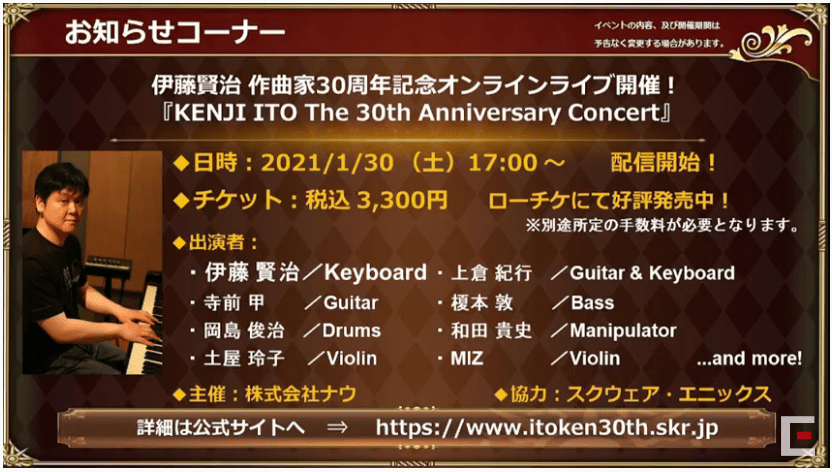

ロマサガRS 公式生放送#6 まとめ
ホーム > ロマサガＲＳ > 生放送index > 公式生放送#6動画
生放送のお品書き
サガカフェ情報
アンケート
-
10位：裏道場の証が溢れてる
→所持できる上限を増やす。2周年のタイミングで対応予定。裏道場の一の段の素材交換も検討。 -
9位：遠征画面
→UI改善を予定。縦長になってきたのでコンパクトに変更。2周年のタイミングで対応予定。 -
8位：オーラムが足りない
→ザクザク財宝でもらえるオーラムを増やす。ザクザク財宝収集で増量？！ -
7位：深奥の密林調査
→年明け以降対応。1回の挑戦で10枚使って報酬も10枚分もらえるように対応する予定。交換品もリニューアル予定（内容は検討中）。 -
6位：覚醒素材が足りない
→現在、ログボ、イベントで入手できるようにしているが、さらなる対応を予定。覚醒素材の砂・石と、書（特に「破」）が足りない問題。開発で議論中 -
5位：決戦島の難易度が高すぎる
→最果ての決戦島は難易度高目のコンテンツとして設定している。難易度の調整は考えていない。 -
4位：オート周回機能の追加について
→スタミナが切れるまでオートは考えていない。今のオート機能のまま、スタイルの育成がしやすいものを検討中。ジュエルビーストの宝箱もその一つ。周回しながらより楽しみが増えるようなコンテンツを検討中。放置ゲーにはしたくない。2倍速するぐらいなら2倍成長の方がやりたい。 -
3位：聖石がどの武器についているかわかるようにしてほしい
→年明け、聖石セット時にその聖石がどの武器についているかわかるようにUI改善予定。 -
2位：能力値、HP上げ、育成が大変
→育成キャンペーンを今後も実施していく。自分が選択したキャラの成長率が〇倍になるアイテムを実装中。年明け。有償か無償か検討中 -
1位：ガチャでいろいろなキャラを再登場させてほしい
→定期的に再登場ガチャ実施。ロマフェスのA, Sについては、2周年のタイミングで、できる限り再登場させる予定。
ギルド
35%がギルド利用。スタンプなどを今後も追加していく。
ギルド内で協力して何かをする予定はない。
コミュニケーションツールとして使ってほしい。

満足度調査
佐賀コラボが1位と5位。能力統一テストは14位。みんな楽しめる形でリニューアルしたい。検討中。

再登場してほしいキャラ
2周年での再登場を検討中。可能な限り過去イベントも再開催することでイベント限定スタイル入手機会を提供していく予定。
再登場してほしいイベント・アイテム
アイスソード2本入手するような状況を回避できるような対応ができれば再登場も考えている。年明け。
キャラクター人気投票
今後のアプデ
遠征
敵の編成が事前にわかるようになる
装備品のロック・アンロックを一括でできるようにする対応
貴重なものは最初からロックかかった状態にした方がいいんじゃないかという意見も開発内である。検討中。
ノブオ氏は佐賀Ｔシャツ売っちゃった。戻ってくる対応するかも！？
強化素材の所持上限を4桁にする。
2周年で対応予定。
11/6以降イベント
ログボ：3000ジュエル、ログインボーナス
アビスナーガとの闘い。少年配布
限定ガチャ
復刻ガチャ（サラ）
復刻ガチャ（トーマス）
11/11から開始（スライドのミス）

育成応援
生放送記念1000ジュエル
200万オーラムもプレゼント。
お知らせ
サガカフェ
12/4まで開催中
ロマ佐賀マンホール設置
コラボ有田焼3商品 e-STOREで予約開始
サガ30周年記念BOX神 12/15発売
SaGa THE STAGE オリジナルサントラ 配信開始
サガクロニクル増補版 12/15発売
ロマサガ3リマスターセール
インサガ情報
イトケンさん作曲家30周年記念ライブ
イトケンさん無観客での配信ライブ実施(2021/1/31)
公式サイト

ロマサガRS2周年フェス
11/28(土)19:00～
・公式生放送＆スペシャルミニライブ